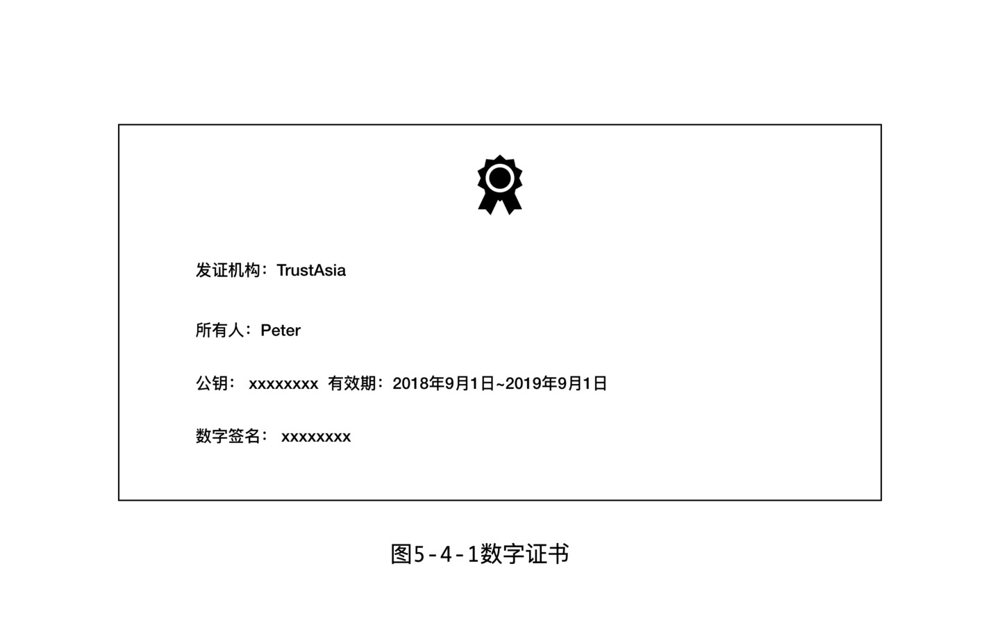
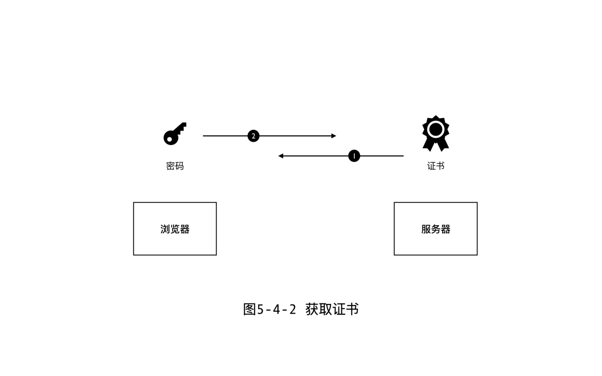

这节聊的话题是数字证书。先来个预警，没有婚姻的社会里面，没有人能理解结婚证是干什么的，同理，不理解公钥加密密码学，也不会理解数字证书什么用。好，那么什么是数字证书，发证机构的作用是什么，加密通信和数字签名过程中证书发挥什么作用呢？下面一一揭晓。
什么是数字证书？
先给出一个精确的定义，究竟什么是数字证书呢？数字证书是一个由可信第三方发出的，用来证明所有人身份以及所有人拥有这个公钥的电子文件。
这里要补充一下。严格来讲，数字证书并不局限于我们这里说的身份证书（ Identity Certificate ）。身份证书也被称为公钥证书，因为证书所有人会经常需要用私钥去证明自己的身份。但是除了身份证书，还有其他类型的证书。例如，授权证书，授权证书是短期有效的，有效性完全靠发证机构担保，所以证书不需要保存证书所有人的公钥。用非电子形式的证书做类比，护照是一种身份证书，而签证是一种授权证书。对于授权证书没必要理解太深入，只要记住，身份证书是有公钥的，通常是由发证机构颁发的保证通信安全的，以后本书中凡是提到证书，默认就是指身份证书。身份的主体可以是人，也可以是网站，或者是物联网设备。最常见的身份证书是 SSL 证书，用在 HTTPS 网站上。
拿出一份典型的数字证书，看看里面到底都包含哪几项内容。首先是所有人姓名，例如 Peter 。第二个是所有人公钥，以及公钥的过期时间。第三项就是发证机构了，也就是下面我们要详细说的 CA 。最后一项也应该是最重要的一项，就是 CA 的数字签名。好，根据咱们已有的数字签名的知识，可以得出几个结论。首先，数字签名是 CA 发出的，也就是说 CA 用自己的信用为这个证书做背书。第二点，证书上同时带有所有人信息和公钥，数字签名保证了证书是不可篡改的，所以说，只要大家信任 CA ，就可以信任所有人和公钥之间的绑定关系。

补充一点。证书上通常看到的不是公钥本身而是指纹（ Fingerprint ）。注意，指纹不是公钥，而是公钥的哈希，但是有了指纹就可以在通信过程中验证公钥了，所以证书上有指纹，就相当于有公钥。实际的加密通信过程中，指纹是非常常用的。因为指纹比较简短，可以方便的在安全通道中传递，例如通过打电话，或者当面手抄。而一旦有了指纹，需要公钥的时候，就可以在不安全通道内发送公钥，指纹可以验证公钥的真伪。
所以说，数字证书就是第三方机构发行的证书，主要作用就是证明你的公钥的确是属于你的，而公钥其实就是我们在数字世界的身份，所以说数字证书的作用实际上就是证明你是你自己。
数字证书的作用
下面我们详细说说数字证书的作用。现实中数字证书常见的两个应用场合，一个是用在数字签名方面，另外一个就是 HTTPS 。我们首先看一个完整的数字签名的使用过程，分析其中的安全隐患，再看看数字证书是怎么解决这个问题的。
Bob 想要把一个带数字签名的信息传递给 Alice 。于是 Bob 生成了公钥和私钥，用私钥签署了信息。然后把公钥上传到一个公共服务器上。如果一切顺利，那 Alice 去下载这个公钥，然后就可以验证信息，确认信息的确是 Bob 发出同时信息没有被篡改过。但是这里的安全漏洞是明显的，那就是 Alice 无法确认她下载的公钥是不是真的是 Bob 的。这就给所谓的“中间人攻击”提供了可能。假设在 Bob 的信息还没有到达 Alice 之前，黑客发起了中间人攻击，删除 Bob 的信息，然后签署一段假信息发送给 Alice ，Alice 收到后去公共服务上下载的公钥其实也被黑客替换过的，她用这个公钥去验证了签名，自认为信息就是 Bob 发出的，所以被骗了。其实仔细想想，问题就出在数字签名本身没有办法验证发送人身份以及她是否拥有这个公钥。
所以要避免中间人攻击，就要使用数字证书。Bob 签名过信息之后，给 Alice 发送信息时附上自己的证书。Alice 收到证书之后，就可以信任证书中的公钥的确就是 Bob 的公钥了，这个公钥就可以保证信息附带的数字签名是 Bob 的，数字签名没问题，就保证了信息是没有被篡改过的。至于 Alice 如何确认证书本身是可信的，稍后我们聊 HTTPS 的过程中再展开聊。
到这里，我们就明白了数字证书在验证数字签名的过程中发挥的作用了。
通过 HTTPS 理解证书
除了数字签名，数字证书在加密通信过程中也发挥着类似的作用。日常中非常常见的加密通信过程就是 HTTPS ，下面我们就详细聊聊 HTTPS 的原理，来帮大家加深一下对证书的理解。
HTTPS 就是安全的 HTTP 的意思，是一套用在浏览器和服务器之间通信的协议。使用了 HTTPS 后，浏览器跟服务器之间所有的通信内容都是加密过的。这个过程中的主角就是 SSL 证书，SSL 证书就是用在 HTTPS 条件下的数字证书，也一样是由可信第三方 CA 来颁发。只不过验证的不是人的身份，而是用来验证服务器身份和它的公钥，目的是建立浏览器和服务器之间的信任。
我现在用浏览器来访问谷歌服务器。要建立加密通道，首先第一步是要传递公钥过来，但是服务器传递过来的公钥如果过程中被篡改过，那么后续的加密通信也就全无安全性可言了。所以谷歌需要先去一个 CA 机构申请 SSL 证书，放到自己的服务器上。这样，我在浏览器中输入谷歌的网址，谷歌那边会首先给浏览器发送 SSL 证书。注意，各个浏览器中都内置了对全球各大 CA 机构的验证机制，底层的原理就是拥有 CA 们的公钥，可以验证证书上 CA 的签名。浏览器于是就可以断定证书中携带过来的公钥就是谷歌的。这时候，浏览器会生成一个秘钥，注意这里就是对称加密的思路了，只需要一个密码同时用来加密和解密，然后发送给谷歌服务器，进行后续的大段信息的通信。

这个就是 HTTPS 的基本原理了。可以看到在加密通信过程中证书的作用也跟在数字签名过程中一样，就是判断公钥所有人。HTTPS 整个过程中，同时涉及到了数字签名和加密通信，还用到了对称加密和公钥加密两种不同的加密方式，算是比较综合的一个知识点了。但是要提醒一下，SSL 证书，尤其是免费的 SSL 证书，一般对于申请人的身份本身没有很严格的审查，CA 只能保障我拥有这个域名和这个服务器，而且这个公钥是跟这个域名和服务器绑定的。但是究竟我是不是好人，网站是不是会干坏事，CA 机构也不太知道。所以一个网站拥有了 HTTPS，浏览器地址栏上面出现了绿色的安全小锁，也并不代表你就可以完全信任这个网站。
总结
关于数字证书我们要聊的就是这些了。关键点就是理解证书的作用，也就是认证所有人和公钥的关系。有了证书就可以避免中间人攻击，可以安全的建立起加密通道。但是我们要知道的是，这里的安全完全基于对一个第三方机构的信任。而 CA 为何值得信任呢？基本上就是因为 CA 一般都是大机构，都是政府认证的，等等这些传统的信任机制。不过当前，已经有区块链项目会通过去中心化的思路来“去信任”，来实现无需 CA 机构的数字证书，例如后面我们会介绍的 Namecoin 和 Handshake 。
参考
- Sunny. SSL 证书是如何工作的. https://www.youtube.com/watch?v=33VYnE7Bzpk
- Sunny. 什么是数字证书. https://www.youtube.com/watch?v=UbMlPIgzTxc
- 维基百科. 发证机构. https://en.wikipedia.org/wiki/Certificate_authority
- kubucation. HTTPS 的工作原理. https://www.youtube.com/watch?v=T4Df5_cojAs
- 维基百科. 身份证书. https://en.wikipedia.org/wiki/Identity_certificate